GeöffnetMi ab 8 · Do & Fr ab 12 · Sa & So ab 14 Uhr
Richtig guad Jausnen
im Mühlviertel.
Prämierter Speck von der Fleischerei gleich nebenan, frisch gebackenes Hausbrot und eine Stube, in der man gern sitzen bleibt. Seit Generationen in Piberschlag.
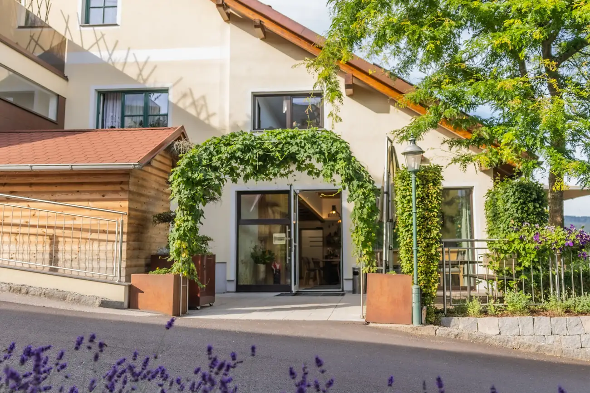
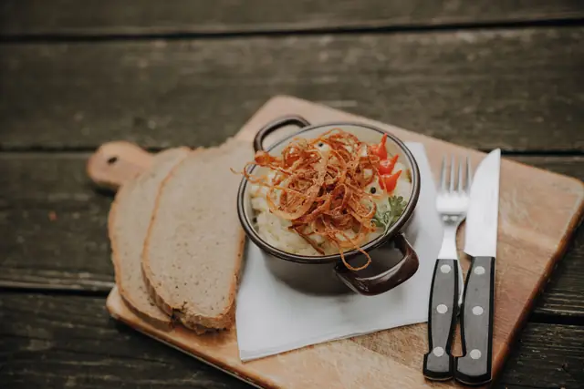
- 100 %Fleisch & Speck aus der Fleischhauerei Schuster
- Täglichfrisches, selbst gebackenes Hausbrot
- ca. 80Plätze für Ihre Feier
- MittwochFrühstück & heißer Leberkäse ab 8 Uhr
Ehrlich. Handwerklich.
Von uns gemacht.
Unsere international prämierten Fleisch-, Speck- und Wurstspezialitäten kommen direkt aus der Fleischerei Schuster gleich nebenan, dem Betrieb vom Bruder der Chefin. Bei uns zählt nicht die Masse, sondern die Spezialität, wie sie nur hier im Mühlviertel entstehen kann.
Jedes Stück wird traditionell von Hand verarbeitet: authentisch, frisch und in höchster Qualität. Dazu gibt's Speck-, Käse- und Brettljausen, hausgemachte Sulz und unser knuspriges Hausbrot.
„Hinter jedem Brettl steckt die Familie Schuster mit Leib und Seele.“
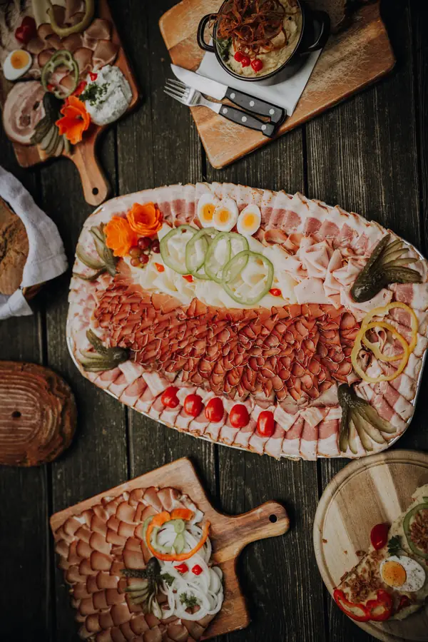
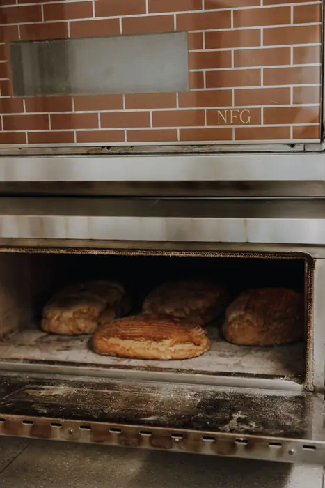
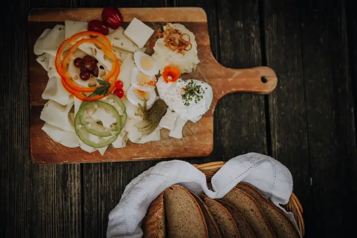
Prämierte Qualität
Speck und Wurst mit internationalen Auszeichnungen, direkt aus der Fleischerei nebenan, einem Familienbetrieb.
Hausbrot, täglich frisch
Knuspriges Schwarzbrot aus dem eigenen Ofen, das Fundament jeder guten Jause.
Urig & familiär
Stube, Wintergarten und Terrasse: gemütlich, bodenständig und zu fairen Preisen.
Des gibt's zum Essen
Unsere Klassiker, fein angerichtet mit Hausbrot.
- Holzwirterjause Für Hungrige€ 21,90
Vo oim a weng was – eher was fia zwoa
- Brettljause€ 12,50
Selch- & Surfleisch, Speck und Topfen, fein garniert
- Speckjause€ 11,90
Fein geschnittener Speck mit Zwiebeln
- Käsejause€ 11,90
Fein geschnittener Käse, Topfen- & Erdäpfelkäse
- Topfen-Erdäpfelkäs-Jause€ 9,50
- Haussulz€ 9,50
- Essigwurst€ 9,50
Brote & Toast
Auf unserem knusprigen Hausbrot.
- Bauerntoast€ 8,90
Hausbrot mit Schinken, Speck, Zwiebel & Käse überbacken
- Belegtes Brot€ 7,70
Surfleisch mit Garnierung und Kren
- Speckbrot€ 7,20
- Verhackertsbrot€ 5,90
- Topfenkäsbrot€ 5,90
- Erdäpfelkäsbrot€ 5,90
- Bratlfettbrot€ 4,90
- Toast€ 4,50
Frühstück von Herzen
Jeden Mittwoch ab 8 Uhr. A weich gekochtes Ei oder a Knusper-Müsli dazua? Einfach fragen!
- Herzens-Frühstück für zwei€ 18,90 p. P.
Schinken, Leberkäse, Prosciutto, Käse, Tomaten-Mozzarella, 4 Gebäck, 2 Aufstriche, Butter, Marmelade, Eierspeise mit Speck, Knusper-Müsli, Gemüse, Obst, Orangensaft, Heißgetränke & 2 prickelnde Gläser
- Stoanegger Frühstück€ 17,90
Schinken, Leberkäse, Hartkäse, 2 hausgemachte Aufstriche, Gemüse & Obst, Eierspeise mit Speck, Butter, Marmelade, 2 Gebäck, Knusper-Müsli, Orangensaft, Heißgetränk
- Mediterranes Frühstück€ 16,90
Prosciutto, Tomaten-Mozzarella mit Basilikum, Rucola, Oliven, Gemüse, 2 hausgemachte Aufstriche, frische Früchte, 2 Gebäck, Heißgetränk
- Da Klassiker€ 11,90
Schinken, Käse, Butter, Marmelade, 2 Gebäck, fein garniert, Heißgetränk
- Veggie Frühstück€ 11,90
Käse, Butter, hausgemachte Aufstriche, 2 Gebäck, fein garniert, Heißgetränk
- De Siaße€ 10,90
Butter, Marmelade, 1 Gebäck, Obst, Knusper-Müsli, Orangensaft, Heißgetränk
- Herzensduett€ 10,90
Avocado- & Erdäpfelkäse auf getoastetem Schwarzbrot, Spiegelei, gebratener Speck, Rucola
- Speck & Oa€ 9,90
Mühlviertler Frühstück in da Rein mit Bio-Eiern vom Neffen Felix (Eddoppler) und knusprigem Schwarzbrot
- A hoaße Gschicht!€ 9,90
Heißer Leberkäse aus dem Backofen mit Gebäck oder Hausbrot
- Für de Kloan€ 3,50
Bärenfrühstück: Toastbrot mit Nutella oder Erdbeermarmelade & frischen Früchten
Einfach vorbestellen
Hier essen oder daheim genießen. Bitte rechtzeitig telefonisch vorbestellen.
- Heißer Leberkäse Jeden Mittwoch€ 9,90
Hausgemacht und frisch aus dem Ofen, mit Senf & Brot, ab 8 Uhr
- Heiße gegrillte Surstelze€ 12,90
1 Portion, auf Vorbestellung
- Geselchte, gekochte Ripperl€ 11,90
1 Portion, auf Vorbestellung
- Speckstüberl-Jausenplatte€ 8,90 / 250 g
Herzhafte kalte Platten oder ein Buffet für Ihr Fest zuhause. Alles ist möglich, wir beraten Sie gerne.
Kaffee & Heißes
Passt zu jeder Tageszeit, und zu jeder Mehlspeis.
- Espresso€ 3,40
- Verlängerter€ 3,70
- Großer Brauner€ 4,10
- Cappuccino€ 4,20
- Hauskaffee€ 4,20
- Café Latte€ 4,40
- Heiße Schokolade€ 4,40
- Tee€ 3,70
Gerne informieren wir Sie über allergene Zutaten in unseren Gerichten. Bitte wenden Sie sich an unser Servicepersonal.
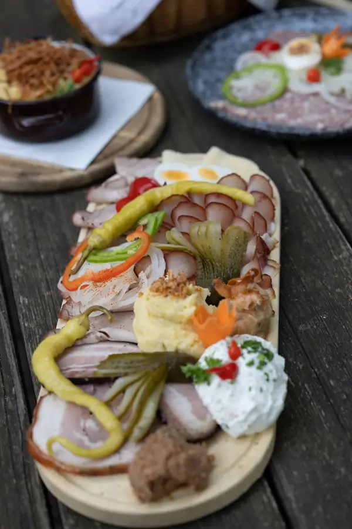
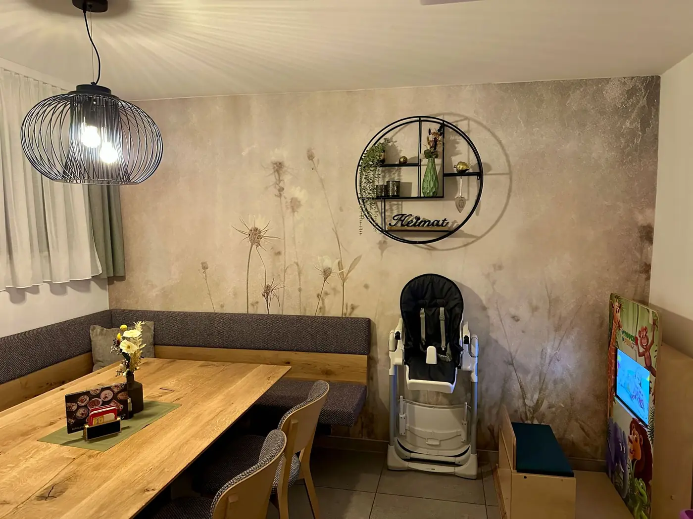
Spielen, während die Großen jausnen.
Bei uns sind Familien herzlich willkommen. In unserer Kinderecke wartet ein Touch-Bildschirm mit lustigen Spielen, da wird keinem Kind langweilig, und die Eltern können in Ruhe ihre Jause genießen.
- Touch-Bildschirm mit Spielen für Kinder
- Hochstuhl für die Kleinsten
- Bärenfrühstück „Für de Kloan“ am Mittwoch
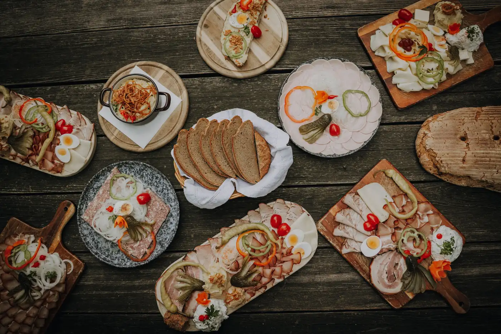
Ihr Fest. Unsere Platten.
Ob Geburtstag, Taufe oder Firmenfeier: Bei uns feiern Sie große und kleine Feste in gemütlicher Atmosphäre, auf Wunsch mit reichlichem warmem oder kaltem Buffet. Ihre selbst gebackenen Mehlspeisen dürfen Sie gerne mitbringen.
und Wintergarten
Warmes oder kaltes Buffet
Reichlich, regional und genau so, wie Sie es sich wünschen.
Platten zum Abholen
Fleisch, Wurst und Käse liebevoll auf edlen Platten angerichtet. Einfach vor der Feier in Ruhe abholen.
Dekoration zum Naschen
Kunstvolle Obst- und Gemüseschnitzereien, die auf jedem Buffet ein Hingucker sind.
Hausbrot & Ripperl
Frisch gebackenes Brot in ausreichender Menge. Ripperl oder Stelzen schon für kleine Gruppen.
Aus Liebe zum Speck.
Das Mühlviertler Speckstüberl ist aus der Leidenschaft von Rudolf Schuster entstanden und über die Jahre zu einer Jausenstation gewachsen, die weit über Piberschlag hinaus bekannt ist. Im Mittelpunkt standen immer die Menschen: gesellige Stunden, lustige Abende, gelebtes Miteinander.
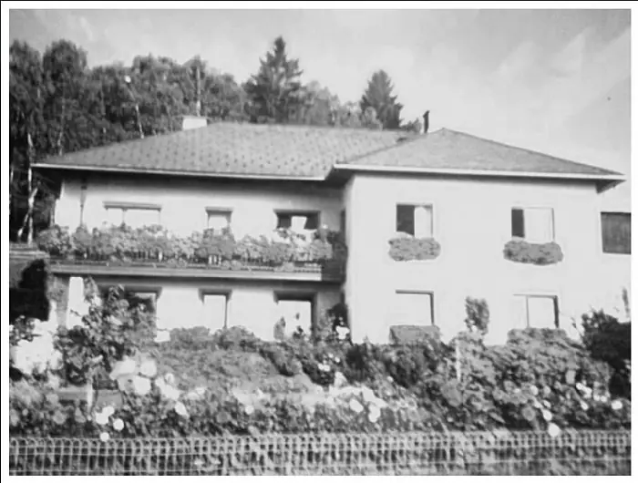
Fleischerei Schuster
Rudolf Schuster legt mit seiner Liebe zum Handwerk und zum Speck den Grundstein für das Speckstüberl.
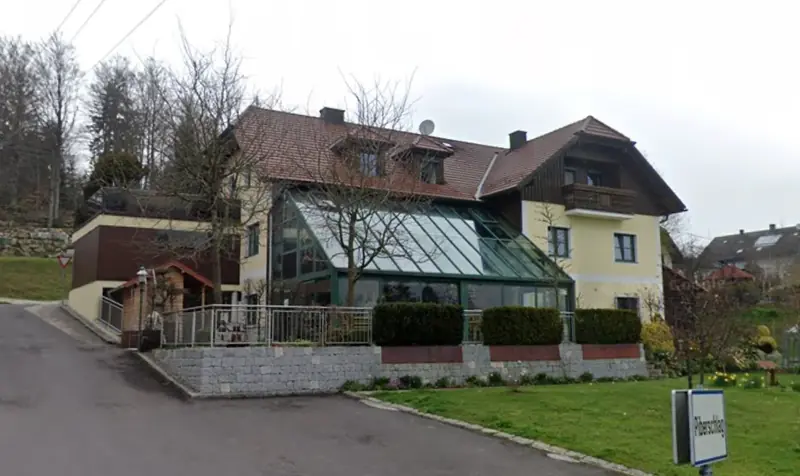
Die nächste Generation
Sabine Schuster steigt ein und lebt den Traum ihres Vaters weiter: eine bodenständige Jausenstation mit selbstgemachten, frischen Produkten.
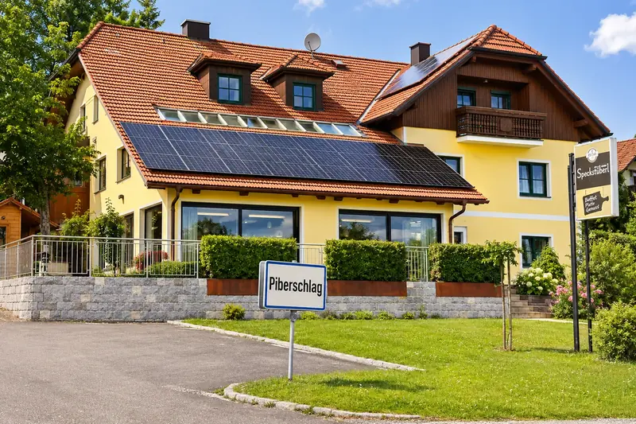
Ein Ort zum Bleiben
Konsequente Spezialisierung, faire Preise und eine urige, familiäre Atmosphäre in Stube, Wintergarten und auf der Terrasse.
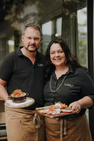
Wir freuen uns auf Ihren Besuch!
Sabine & Paul Schuster-IndingerEin Blick hinein.
Kommen Sie vorbei.
Öffnungszeiten
- MontagRuhetag
- DienstagRuhetag
- Mittwochab 8 Uhr · Frühstück
- Donnerstagab 12 Uhr
- Freitagab 12 Uhr
- Samstagab 14 Uhr
- Sonntagab 14 Uhr
- Feiertageab 14 Uhr
Ganzjährig geöffnet. Für reservierte Gruppen ändern wir unsere Öffnungszeiten gerne. Einfach anrufen!
So finden Sie uns
- Piberschlag 72
4184 Vorderweißenbach - 07216 / 61 05
- 0664 / 444 82 37
- speckstueberl@aon.at
Termine
- Mi8 UhrFrühstück & heißer Leberkäse
Jeden Mittwoch ab 8 Uhr
Tisch, Feier oder Platten anfragen
Schicken Sie uns Ihre Wünsche, wir melden uns so rasch wie möglich. Für kurzfristige Reservierungen rufen Sie am besten direkt an: 07216 / 61 05.